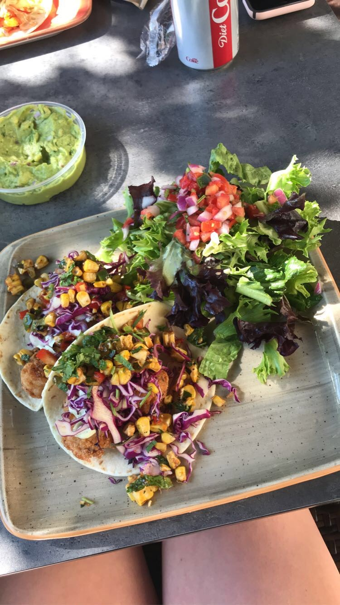
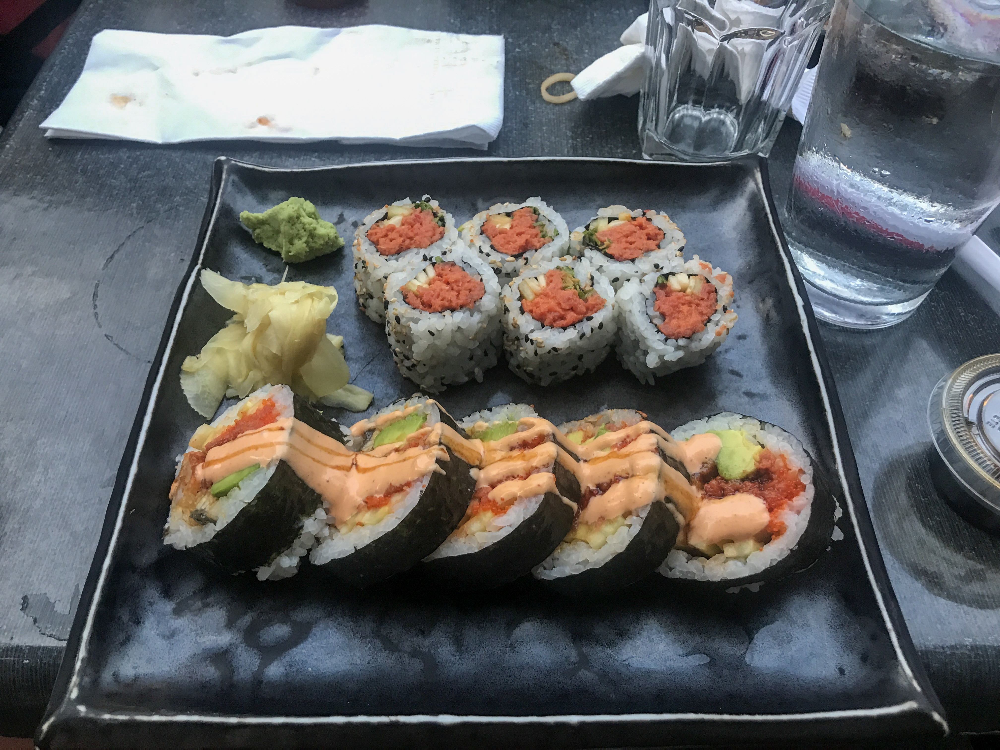
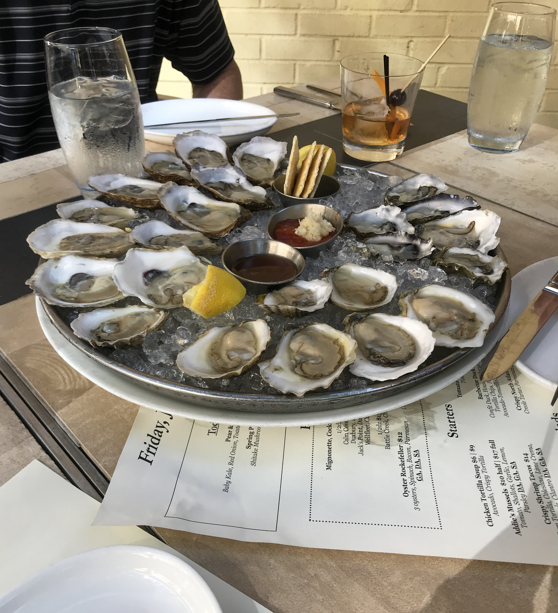
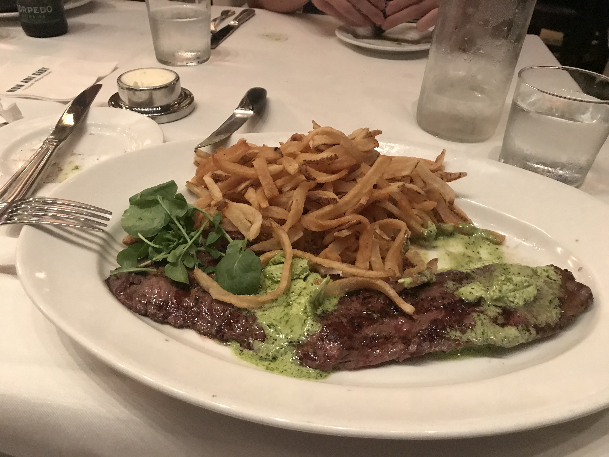
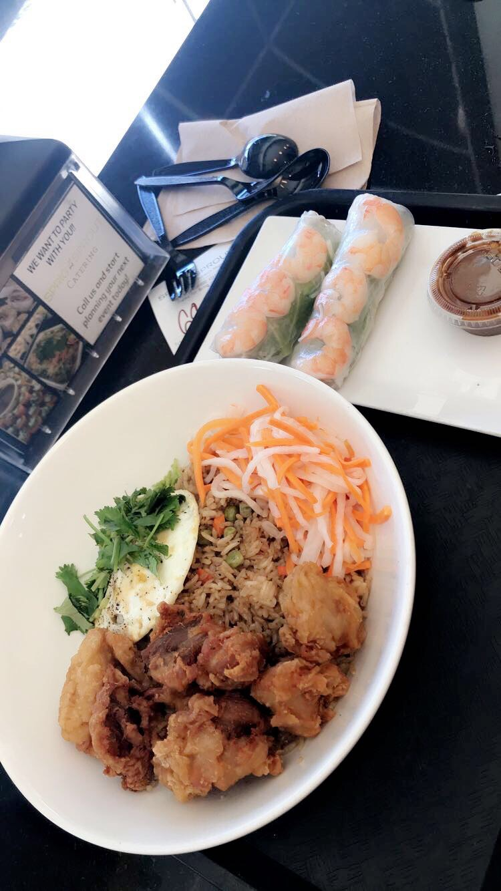
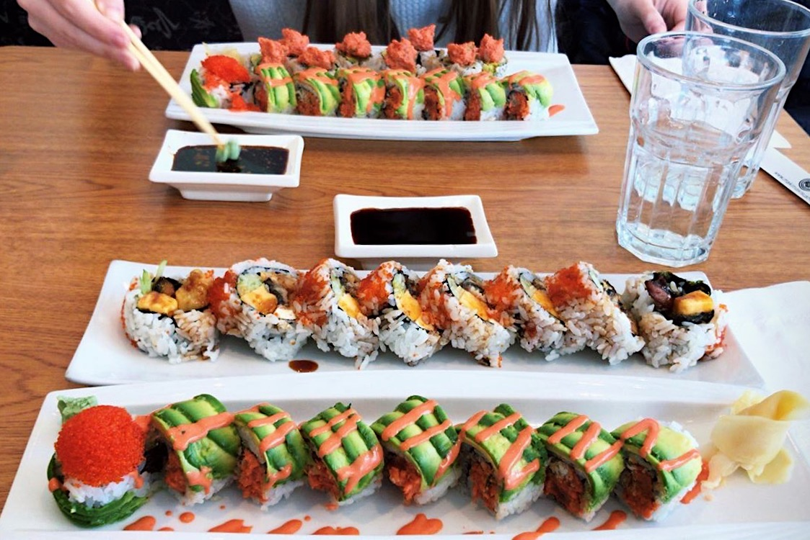
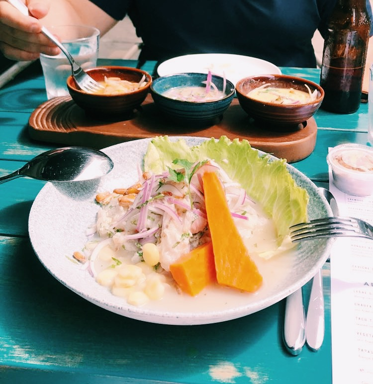
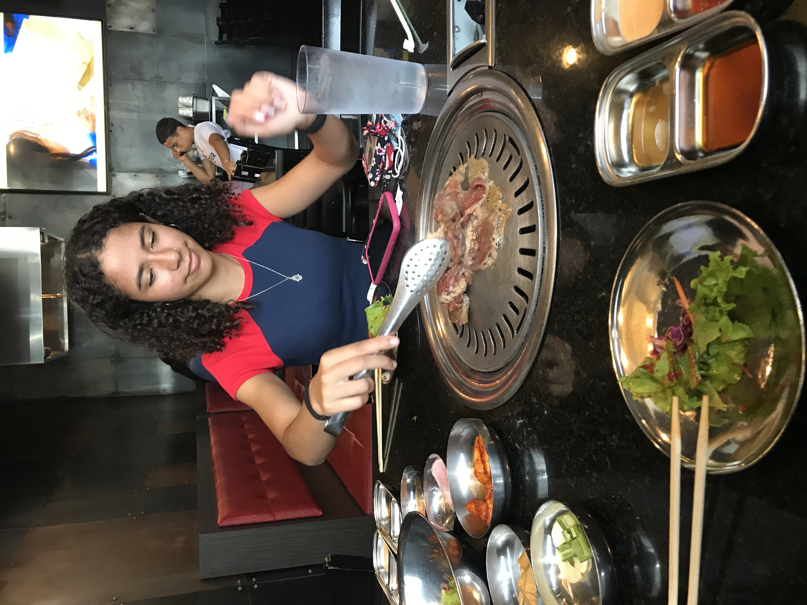
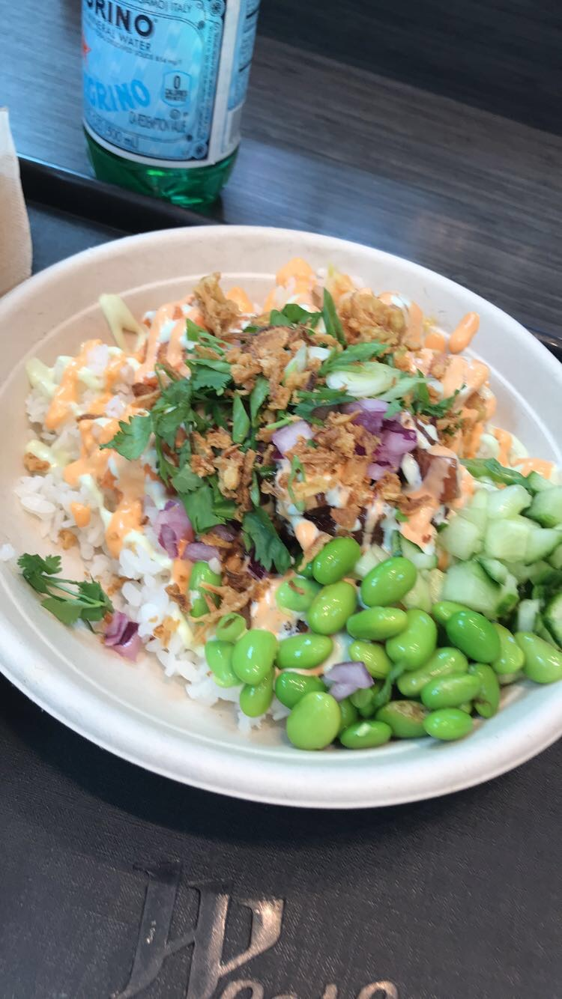
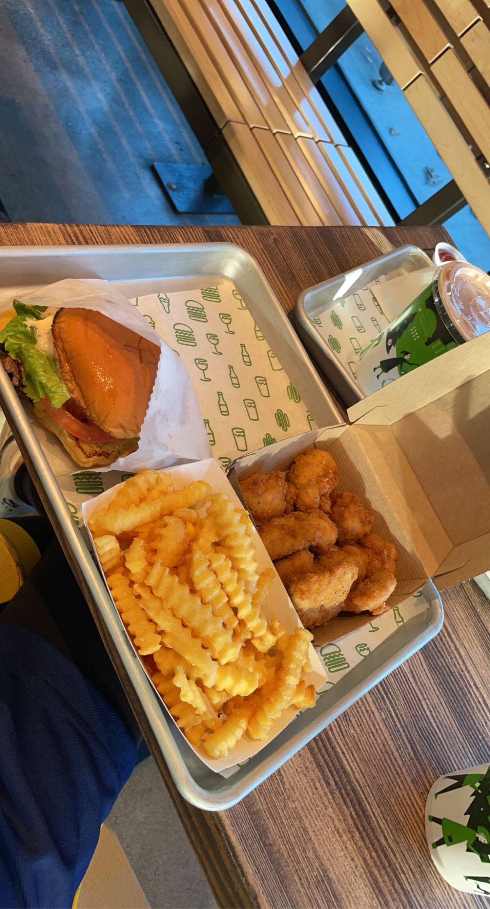

This page is dedicated to some of my favorite restaurants. This is by no means a complete list but it's a start. The majority of these restaurants are located in the DC, Maryland, Virginia area. Perhaps in the future I'll expand to Ann Arbor restaurants too! Who knows?
1. Fish Taco
Coming in at number one is my all time favorite and go to restaurant Fish Taco. Not only is it delicious, its also pretty healthy and fast. The decor is also nice and they play fun music
2. Raku
Coming in at number two is my go to sushi place to go to for dinner. The sushi is good and their outdoor seating is a nice place to relax and do some people watching while enjoying your meal.
3. King Street Oyster Bar
Coming in at number three is my newest go to happy hour spot. While I am not of age, my mom enjoys the cocktails while I enjoy the $1 oysters, calamari and tuna tartar tacos.
4. Mon Ami Gabi
Mon Ami Gabi is definitely one of my go to brunch spots. While I typically order the steak frites with the herb butter sometimes I like to switch it up and get their croque madame. Their desserts are also really good.
5. Sprig & Sprout
Sprig and Sprout might be one of the most underrated restaurants in the area. It is a small hole in the wall in Glover park. This is my go to Vietnamese restaurant. I think I've tried pretty much everything on the menu and I am yet to be dissapointed.
6. Maki Maki
Maki Maki is my go to place for takeout Sushi. Their sushi is great and super fresh and their other entrees come in huge portions.
7. Pisco y Nazca
Ceviche might be my all time favorite food, which is why Pisco y Nazca deserves a spot on this list. They have the best ceviche I have had in the US. Their lomo saltado is also really good.
8. Iron Age
Korean Barbeque is always a good time. Iron Age all you can eat Korean BBQ is delicious. The only downside is they do not take reservations and there is always a wait, but I promise it is worth it.
9. Poki DC
Poke is another one of my favorite foods and this is definitely my go to Poke place at home. It's like sushi you can customize exactly to your liking, definitely worth the drive.
10. Shake Shack
And last, but not least I had to include Shake shack. Sometimes your just really craving a good greasy burger and shake shack just hits the spot.